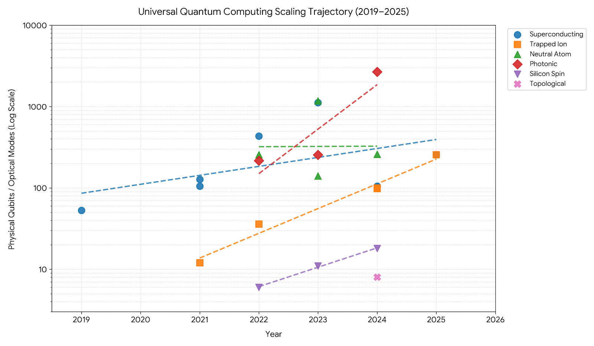

Qubit Growth by Platform
I used the historical hardware data reported by Qolour's quantum computer database to compare reported qubit counts across recent generations of photonic, superconducting, and trapped-ion quantum computers.

Reported qubit counts plotted from data published by Qolour.
What the Plot Suggests
When plotted over time, the reported qubit counts suggest that photonic quantum-computing platforms have increased their qubit counts more rapidly than the superconducting and trapped-ion systems included in this comparison. The difference is especially visible in the recent photonic data points.
An Important Limitation
Qubit count alone is not a complete measure of a quantum computer's capability. This comparison does not account for coherence time, gate fidelity, error rates, connectivity, or the practical usefulness of the available qubits. Those factors strongly influence how reliably a device can execute a quantum algorithm.
Even with that limitation, tracking qubit counts is a useful way to observe how different hardware approaches are scaling. The graph highlights the rapid development occurring across the field while also showing why hardware comparisons need to consider more than a single metric.